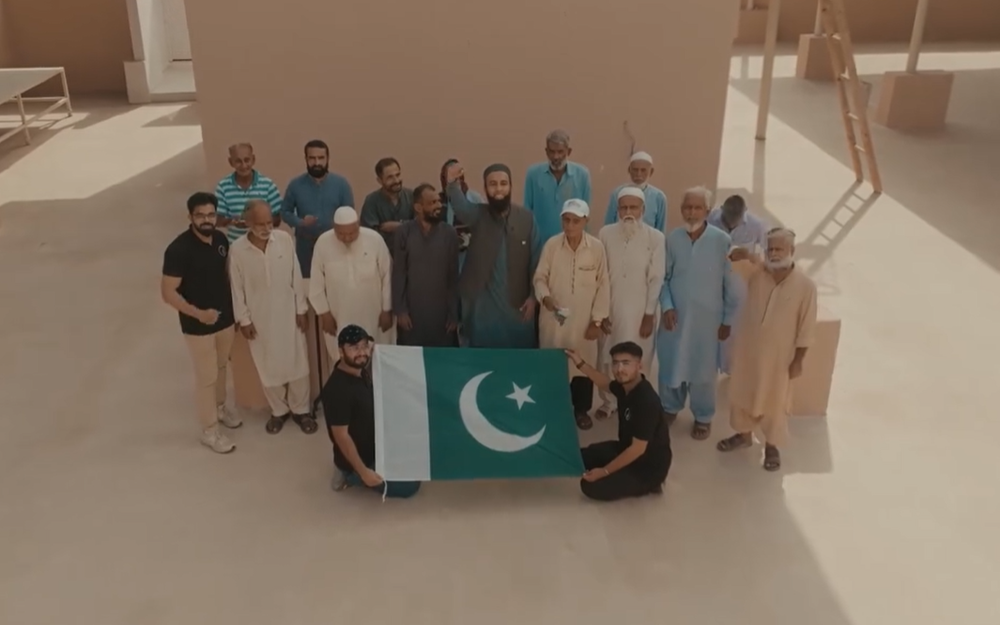

Interrutional donors, visit your site.


Saylani Welfare is on the ground and already working with local communities to assess how best to support underprivileged families in more than 63 areas of day to day lives.
.png)


Saylani Welfare has also set up a clinic for the best treatment of hepatitis patients where hepatitis patients are being treated

Saylani Welfare is also providing its own home facility for the homeless people. So far, thousands of houses and flats have been constructed and given in easy installments

We are committed to developing more than 1 million software developers, which will add about 100 billion annually to Pakistan's economy and help ease the debt burden on Pakistan

In Tharparkar, Saylani has set up several schools and ro plants, dug wells and brought the children there to Karachi and taught them modern technology

Food
(Daily)

Family Adoption
(Monthly)
Education
(Monthly)

Medical
(Monthly)
(Group Director, Gerry's Group)
Saylani Welfare Trust is a name that needs no introduction today. The journey this team embarked upon was made
possible owing to their zeal, enthusiasm & commitment to the society and by the grace of Allah (SWT), it has
become a name that we need and not just the one we want. I wish Saylani's team all the success and blessing that
they deserve for future, May God bless Saylani and ensure prosperity and happiness for our people, Ameen!
